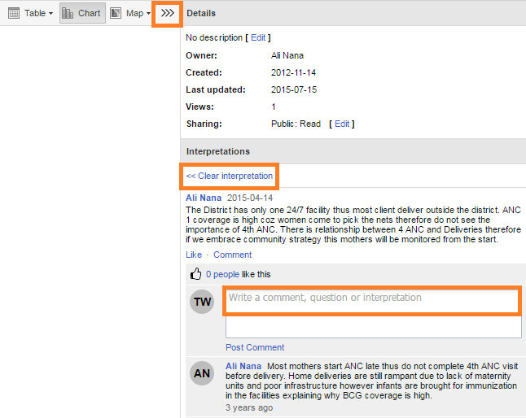

Saving your charts as favorites makes it easy to find them later. You can also choose to share them with other users as an interpretation or display them on the dashboard.
You can view the details and interpretations of your favorites when you open the Pivot table or Data Visualization app.
Click Favorites > Open.
Enter the name of a favorite in the search field, or click Prev and Next to display favorites.
Click Favorites > Save as.
Enter a name and if you wish to, a title and a description for your favorite.
Click Save.
Click Favorites > Rename.
Enter the new name for your favorite.
Click Update.
An interpretation is a link to a resource with a description of the data at a given period. This information is visible on the dashboard. To create an interpretation, you first need to create a favorite. If you've shared your favorite with other people, the interpretation you write is visible to those people.
Click Favorites > Write interpretation.
In the text field, type a comment, question or interpretation. You can see this information on the dashboard.
Add a user group that you want to share your favorite with by clicking the + icon.
Select:
Allow external access if you want everyone to view this interpretation.
Public access and choose a setting: None, Can view, Can edit and view.
Administrators
Click Share.
Click Favorites > Get link.
Choose one of the following:
Open in this app: You get a URL for the favorite which you can share with other users by email or chat.
Open in web api: You get a URL of the API resource. By default this is an HTML resource, but you can change the file extension to ".json" or ".csv".
Open a favorite with one or more interpretations.
Click <<< in the top right of the workspace to view, like and comment on interpretations.
Click an interpretation. The chart or pivot table displays information based on when the interpretation was created. The date of the chart or table is visible next to the chart or table name, at the top of the workspace.
Click Comment to write an interpretation, and Post comment to publish your comment on the dashboard. This information is shared with people who have saved this interpretation as a favorite.
To display a chart or table with the most recent information, click Clear interpretation.
|  |